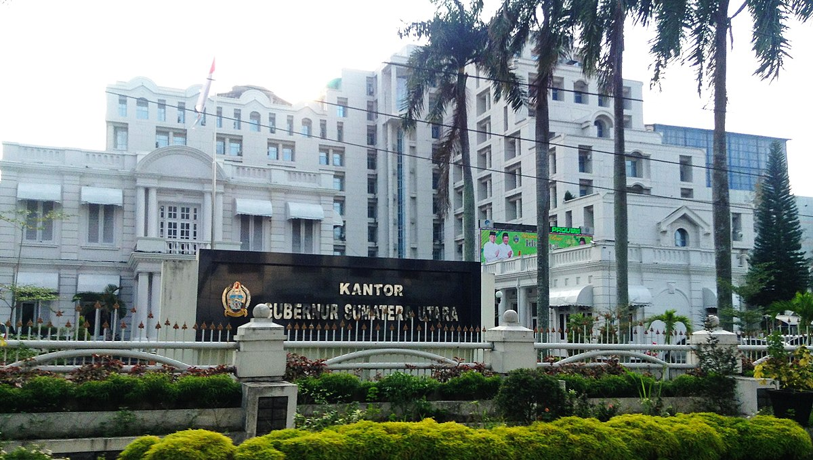
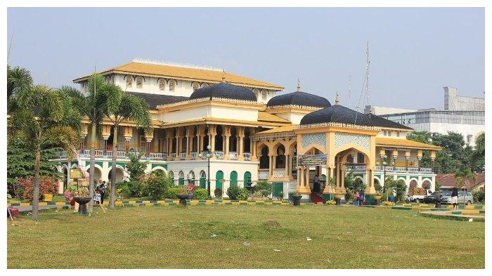
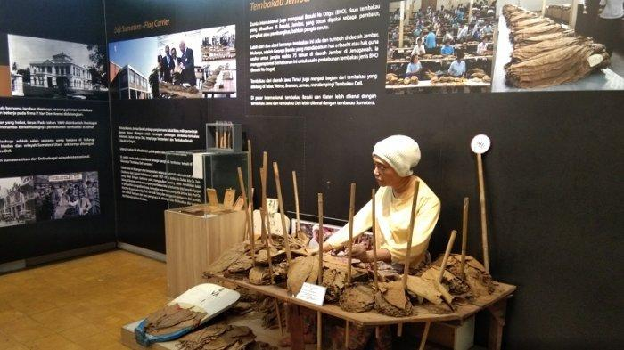
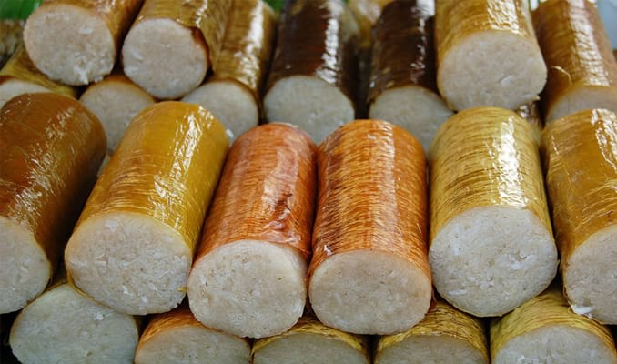
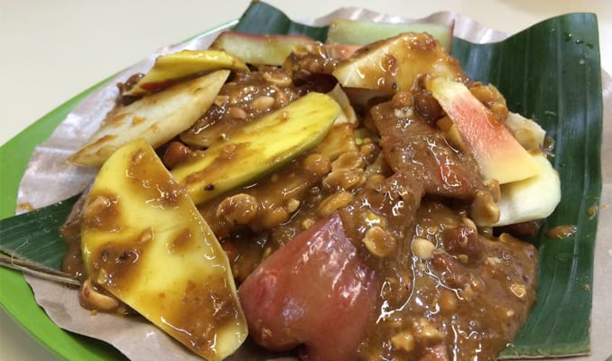
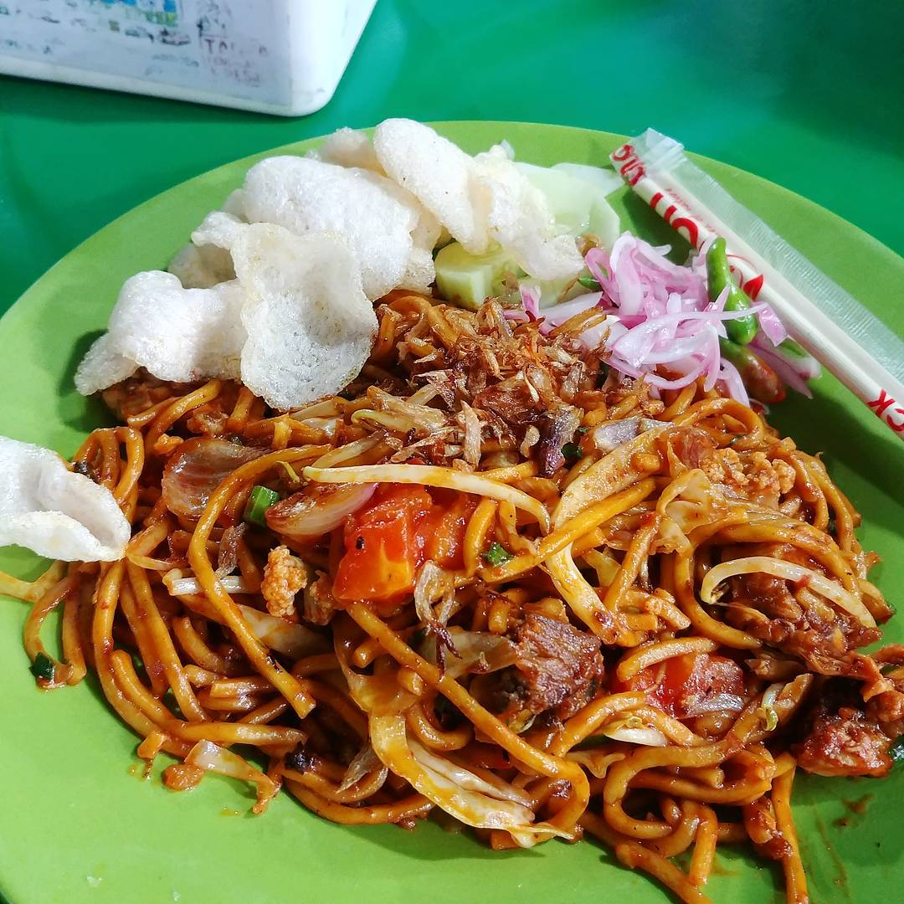
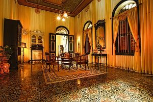
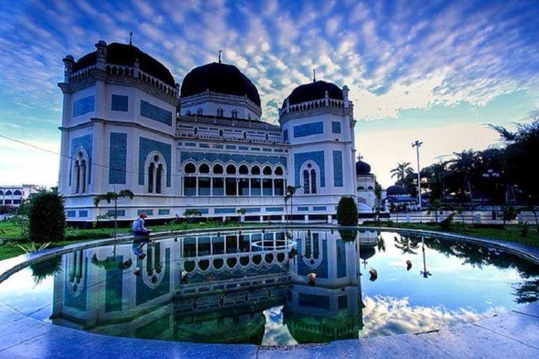
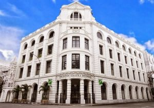

Deskripsi

Kota Medan adalah ibu kota provinsi Sumatra Utara, Indonesia. Kota ini merupakan kota
terbesar ketiga di Indonesia setelah Jakarta dan Surabaya, serta kota terbesar di luar Pulau Jawa.
Kota Medan merupakan pintu gerbang wilayah Indonesia bagian barat dengan keberadaan Pelabuhan
Belawan dan Bandar Udara Internasional Kuala Namu yang merupakan bandara terbesar kedua di
Indonesia. Akses dari pusat kota menuju pelabuhan dan bandara dilengkapi oleh jalan tol dan kereta
api. Medan adalah kota pertama di Indonesia yang mengintegrasikan bandara dengan kereta api.
Berbatasan dengan Selat Malaka, Medan menjadi kota perdagangan, industri, dan bisnis yang sangat
penting di Indonesia.
Sejarah Medan berawal dari sebuah kampung yang didirikan oleh Guru Patimpus di pertemuan Sungai Deli
dan Sungai Babura. Hari jadi Kota Medan ditetapkan pada 1 Juli 1590. Selanjutnya pada tahun 1632,
Medan dijadikan pusat pemerintahan Kesultanan Deli, sebuah kerajaan Melayu. Bangsa Eropa mulai
menemukan Medan sejak kedatangan John Anderson dari Inggris pada tahun 1823. Peradaban di Medan
terus berkembang hingga Pemerintah Hindia Belanda memberikan status kota pada 1 April 1909 dan
menjadikannya pusat pemerintahan Karesidenan Sumatra Timur. Memasuki abad ke-20, Medan menjadi kota
yang penting di luar Jawa, terutama setelah pemerintah kolonial membuka perusahaan perkebunan secara
besar-besaran.
Menurut Bappenas, Medan adalah salah satu dari empat pusat pertumbuhan utama di Indonesia, bersama
dengan Jakarta, Surabaya, dan Makassar.Medan adalah kota multietnis yang penduduknya terdiri dari
orang-orang dengan latar belakang budaya dan agama yang berbeda-beda. Selain Melayu dan Karo sebagai
penghuni awal, Medan didominasi oleh etnis Jawa, Batak, Tionghoa, Minangkabau, Mandailing, dan
India. Mayoritas penduduk Medan bekerja di sektor perdagangan, sehingga banyak ditemukan ruko di
berbagai sudut kota. Di samping kantor-kantor pemerintah provinsi, di Medan juga terdapat
kantor-kantor konsulat dari berbagai negara seperti Amerika Serikat, Jepang, Malaysia, dan Jerman.
Sejarah
Medan Tanah Deli

Istana Maimun di Medan (Commons.wikimedia.org/mimihitam)
Pada zaman dahulu Kota Medan ini dikenal dengan nama Tanah Deli dan keadaan tanahnya berawa-rawa
kurang lebih seluas 4000 Ha. Beberapa sungai melintasi Kota Medan ini dan semuanya bermuara ke
Selat Malaka. Sungaisungai itu adalah Sei Deli, Sei Babura, Sei Sikambing, Sei Denai, Sei Putih,
Sei Badra, Sei Belawan dan Sei Sulang Saling/Sei Kera. Pada mulanya yang membuka perkampungan
Medan adalah Guru Patimpus lokasinya terletak di Tanah Deli, maka sejak zaman penjajahan orang
selalu merangkaikan Medan dengan Deli (Medan–Deli). Setelah zaman kemerdekaan lama kelamaan
istilah Medan Deli secara berangsur-angsur lenyap sehingga akhirnya kurang popular.
Kampung Medan dan Tembakau Deli

Pada awal perkembangannya merupakan sebuah kampung kecil bernama "Medan Putri". Perkembangan
Kampung "Medan Putri" tidak terlepas dari posisinya yang strategis karena terletak di pertemuan
sungai Deli dan sungai Babura, tidak jauh dari jalan Putri Hijau sekarang. Kedua sungai tersebut
pada zaman dahulu merupakan jalur lalu lintas perdagangan yang cukup ramai, sehingga dengan
demikian Kampung "Medan Putri" yang merupakan cikal bakal Kota Medan, cepat berkembang menjadi
pelabuhan transit yang sangat penting.
Semakin lama semakin banyak orang berdatangan ke kampung ini dan isteri Guru Patimpus yang
mendirikan kampung Medan melahirkan anaknya yang pertama seorang laki-laki dan dinamai si Kolok.
Mata pencarian orang di Kampung Medan yang mereka namai dengan si Sepuluh dua Kuta adalah
bertani menanam lada. Tidak lama kemudian
lahirlah anak kedua Guru Patimpus dan anak inipun laki-laki dinamai si Kecik.
Pada zamannya Guru Patimpus merupakan tergolong orang yang berfikiran maju. Hal ini terbukti
dengan menyuruh anaknya berguru (menuntut ilmu) membaca Alqur’an kepada Datuk Kota Bangun dan
kemudian memperdalam tentang agama Islam ke Aceh.
Keterangan yang menguatkan bahwa adanya Kampung Medan ini adalah keterangan H. Muhammad Said
yang mengutip melalui buku Deli In Woord en Beeld ditulis oleh N.Ten Cate. Keterangan tersebut
mengatakan bahwa dahulu kala Kampung Medan ini merupakan Benteng dan sisanya masih ada terdiri
dari dinding dua lapis berbentuk bundaran yang terdapat dipertemuan antara dua sungai yakni
Sungai Deli dan sungai Babura. Rumah Administrateur terletak diseberang sungai dari kampung
Medan. Kalau kita lihat bahwa letak dari Kampung Medan ini adalah di Wisma Benteng sekarang dan
rumah Administrateur tersebut adalah kantor PTP IX Tembakau Deli yang sekarang ini.
Sekitar tahun 1612 setelah dua dasa warsa berdiri Kampung Medan, Sultan Iskandar Muda yang
berkuasa di Aceh mengirim Panglimanya bernama Gocah Pahlawan yang bergelar Laksamana Kuda Bintan
untuk menjadi pemimpin yang mewakili kerajaan Aceh di Tanah Deli.
Gocah Pahlawan membuka negeri baru di Sungai Lalang, Percut. Selaku Wali dan Wakil Sultan Aceh
serta dengan memanfaatkan kebesaran imperium Aceh, Gocah Pahlawan berhasil memperluas wilayah
kekuasaannya, sehingga meliputi Kecamatan Percut Sei Tuan dan Kecamatan Medan Deli sekarang. Dia
juga mendirikan kampung-kampung Gunung Klarus, Sampali, Kota Bangun, Pulau Brayan, Kota Jawa,
Kota Rengas Percut dan Sigara-gara.
Dengan tampilnya Gocah pahlawan mulailah berkembang Kerajaan Deli dan tahun 1632 Gocah Pahlawan
kawin dengan putri Datuk Sunggal. Setelah terjadi perkawinan ini raja-raja di Kampung Medan
menyerah pada Gocah Pahlawan.
Gocah Pahlawan wafat pada tahun 1653 dan digantikan oleh puteranya Tuangku Panglima Perunggit,
yang kemudian memproklamirkan kemerdekaan Kesultanan Deli dari Kesultanan Aceh pada tahun 1669,
dengan ibukotanya di Labuhan, kira-kira 20 km dari Medan.
Jhon Anderson seorang Inggris melakukan kunjungan ke Kampung Medan tahun 1823 dan mencatat dalam
bukunya Mission to the East Coast of Sumatera bahwa penduduk Kampung Medan pada waktu itu masih
berjumlah 200 orang tapi dia hanya melihat penduduk yang berdiam dipertemuan antara dua sungai
tersebut. Anderson menyebutkan dalam bukunya “Mission to the East Coast of Sumatera“ (terbitan
Edinburg 1826) bahwa sepanjang sungai Deli hingga ke dinding tembok mesjid Kampung Medan di
bangun dengan batu-batu granit berbentuk bujur sangkar. Batu-batu ini diambil dari sebuah Candi
Hindu Kuno di Jawa.
Pesatnya perkembangan Kampung "Medan Putri", juga tidak terlepas dari perkebunan tembakau yang
sangat terkenal dengan tembakau Delinya, yang merupakan tembakau terbaik untuk pembungkus
cerutu. Pada tahun 1863, Sultan Deli memberikan kepada Nienhuys Van der Falk dan Elliot dari
Firma Van Keeuwen en Mainz & Co, tanah seluas 4.000 bahu (1 bahu = 0,74 ha) secara erfpacht 20
tahun di Tanjung Sepassi, dekat Labuhan. Contoh tembakau deli. Maret 1864, contoh hasil panen
dikirim ke Rotterdam di Belanda, untuk diuji kualitasnya. Ternyata daun tembakau tersebut sangat
baik dan berkualitas tinggi untuk pembungkus cerutu.
Kemudian di tahun 1866, Jannsen, P.W. Clemen, Cremer dan Nienhuys mendirikan de Deli Maatscapij
di Labuhan. Kemudian melakukan ekspansi perkebunan baru di daerah Martubung, Sunggal (1869),
Sungai Beras dan Klumpang (1875), sehingga jumlahnya mencapai 22 perusahaan perkebunan pada
tahun 1874. Mengingat kegiatan perdagangan tembakau yang sudah sangat luas dan berkembang,
Nienhuys memindahkan kantor perusahaannya dari Labuhan ke Kampung "Medan Putri". Dengan demikian
"Kampung Medan Putri" menjadi semakin ramai dan selanjutnya berkembang dengan nama yang lebih
dikenal sebagai "Kota Medan".
Kuliner
Lemang / Lontong Khas Medan

Lemang lebih banyak ditemui di kota Tebing Tinggi, Sumatera Utara.
Meskipun keberadaannya lebih dominan di Tebing Tinggi, lemang juga bisa kamu dapati di kota
Medan.
Lemang merupakan makanan khas Medan yang menggunakan bahan utama pangan berupa beras ketan.
Lemang dimasak atau dimatangkan di dalam seruas bambu yang sebelumnya digulung dengan selembar
daun pisang.
Rujak Kolam Medan

Rujak kolam medan sendiri sama seperti rujak pada umumnya.
Bedanya, rasa dari rujak kolam medan terkenal pedas dan menyegarkan. Buah-buahan yang dipakai
juga beragam, ada jeruk Bali, ubi, belimbing, nanas, pepaya mengkal, jambu air, jambu biji,
bengkuang, mentimun, mangga muda, dan kedondong.
Mie Aceh Medan

Mie Aceh kini telah beralih ke Medan dan berhasil menjadi salah satu makanan paling ikonik di
kota tersebut. Tidak hanya murah, Mie Aceh juga memiliki rasa yang istimewa. Kamu bisa menemukan
sajian lezat ini di Mie Aceh Titi Bobrok, yang buka hingga jam 10 malam.
Pariwisata
Tjong A Fie Mansion

Tjong A Fie Mansion menjadi destinasi wisata wajib pertama yang harus Anda kunjungi selagi berada
di Medan. Tempat wisata di Medan ini merupakan sebuah museum yang dulunya adalah bangunan rumah
milik saudagar Tionghoa terkemuka bernama Tjong A Fie. Pada tahun 2009, rumah ini secara resmi
dijadikan sebagai museum dan pengelolaannya dilakukan oleh keturunan Tjong A Fie. Tercatat,
rumah ini mulai dibangun pada tahun 1895 dan selesai pada tahun 1900 dengan ukuran mencapai
8.000 meter persegi. Di dalamnya terdapat total sebanyak 35 ruangan. Rumah ini hadir dengan
menggunakan kombinasi antara unsur art deco, Tiongkok, serta Melayu. Konon, pembangunan rumah
ini dilakukan dengan berdasarkan pada desain Cheong Fatt Tze Mansion yang ada di Penang,
Malaysia.
Masjid Raya Medan

Masjid Raya Medan menjadi destinasi wisata wajib berikutnya yang dapat ditelusuri di Medan.
Bangunan ini memiliki usia yang tak jauh berbeda dengan Tjong A Fie Mansion, pembangunannya
dimulai pada tahun 1906, dan selesai pada tahun 1909. Bangunannya pun sangat khas, dengan bentuk
segi delapan dan bergaya arsitektur percampuran antara Timur Tengah, Spanyol, serta India.
Pendirian Masjid Raya Medan juga menjadi salah satu bukti toleransi antar umat beragama di
Medan. Konon, Tjong A Fie turut menyumbangkan dana untuk pembangunan masjid ini. Desain yang
megah memang membuat pembangunan Masjid Raya Medan butuh biaya besar, total mencapai 1 juta
gulden pada saat itu. Dengan biaya yang besar tersebut, tidak heran kalau kemegahan masjid yang
juga dikenal dengan nama Masjid Raya Al Mashun ini mengalahkan kemewahan istana. Apalagi,
material serta perabotan di dalam masjid sengaja didatangkan dari luar negeri. Misalnya, marmer
yang berasal dari Italia, kaca patri dari Tiongkok, serta lampu gantung yang diimpor dari
Perancis.
Gedung London Sumatera

Gedung London Sumatera (Lonsum) bisa menjadi destinasi berikutnya. Gedung ini dibangun pada tahun
1906 bersamaan dengan kelahiran Ratu Juliana dari Belanda. Bangunan ini diirikan oleh perusahaan
bernama Harrisons & Crosfield (H&C) yang berasal dari Inggris. Gedung ini dikenal sebagai gedung
yang modern pada masanya. Buktinya, Gedung yang kemudian dijual ke Pemerintah Belanda ini
merupakan gedung pertama di Medan yang menggunakan lift. Keberadaan lift tersebut pun memberi
kemudahan bagi para pengunjung untuk menjangkau total 5 lantai di gedung ini. Saat ini, Gedung
Lonsum masih digunakan sebagai area perkantoran. Oleh karena itu, para pengunjung yang ingin
menyaksikan keunikan gedung tua ini sebaiknya memilih waktu kedatangan di akhir pekan, ketika
kantor tidak beroperasi. Tak jarang, ada komunitas pencinta sejarah yang mengadakan tur
berkeliling gedung tua ini.
Penangkaran Buaya Asam Kumbang
Tempat wisata di Medan yang menarik berikutnya adalah Penangkaran Buaya Asam Kumbang. Di tempat
wisata di Medan yang satu ini, Anda dapat menyaksikan keberadaan total sebanyak 2.700 ekor buaya
dengan beragam ukuran. Mulai dari buaya yang baru saja menetas, hingga buaya berusia mencapai 43
tahun dengan panjang 5 meter. Secara khusus, tempat wisata di Medan ini menjadi pilihan wisata
edukatif yang cocok bagi para pelajar. Mereka akan diajak untuk mengenal lebih dekat reptil yang
satu ini. Tidak ketinggalan, para pengunjung juga dapat mencoba untuk memberi makan para buaya.
Cukup dengan membayar Rp35.000, Anda dapat melemparkan bebek ke kolam penuh buaya.
Oleh Oleh